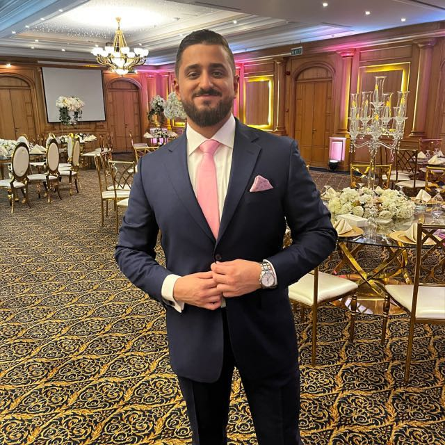

My Resume

Professional Summary
I am a dynamic professional committed to empowering startups and individuals through strategic coaching,
innovative project management, and holistic development frameworks. With a strong background in engineering,
research, and development, I drive success and well-being in all my ventures.
Education
MSc. Mechanical Engineering, Qatar University
June 2019
BSc. Mechanical Engineering, Qatar University
June 2016
Professional Experience
-
Startup Coach & Entrepreneurship Projects Coordinator at Qatar University
May 2023-Present
- Creating Go-to-Market Plans for five operational start-ups while aiding them as a business development manager to
successfully enter their target markets
- Acted as the lead organizer and project manager for the Global Innovation Summit, handling logistics such as venue
selection, catering, website management, and collaboration with internal and external stakeholders to align with the
vision of GFCC.
- Coached 100+ startups through an array of challenges that encompass market discovery, prototyping, business
development, and preparation for demo day presentations, along with coordinating logistics for the incubation
program. (rated as a 4.7/5 coach from over 100 participants)
-
Founder at All-Star Coaching LTD
September 2022-Present
- Developing a universal framework for personal and professional development with the end goal of enabling people to
elevate their professional performance, mental and physical well-being, while living more fulfilled lives.
-
Graduate Teaching & Research Assistant at Qatar University
September 2019-August 2022
- Supervised and guided 300+ students through their Manufacturing Processes course projects.
- Acted as a primary instructor for Manufacturing Processes laboratory sessions, including successfully training 400+
students on SolidWorks software.
- Developed a novel AI model for the detection and segmentation of foot ulcers in diabetic patients with 90%+ accuracy
(highest in the literature).
Relevant Skills
- Team Leadership
- Communication & Presentation
- Agile Project Management
- Strategic Planning
- Coaching & Consulting
- Event Management
- Stakeholder Management
- Machine Learning Model Training
- Digital Marketing & Content Writing
Other